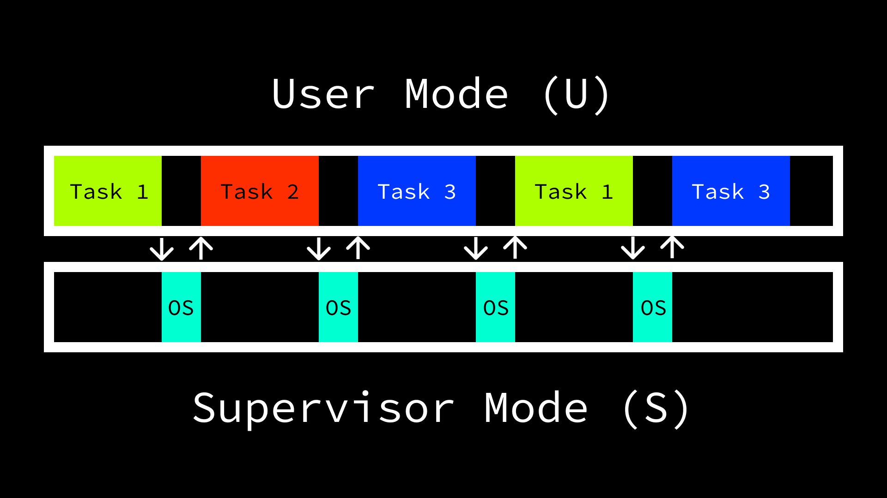
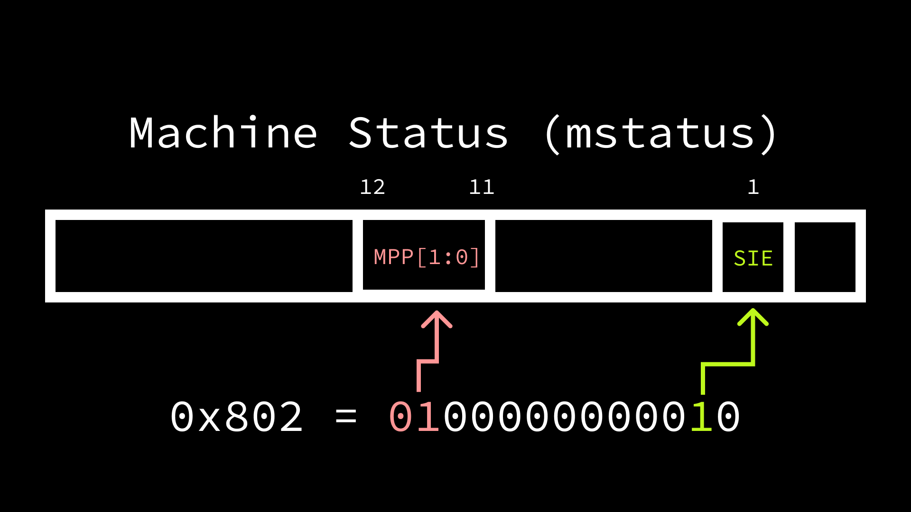
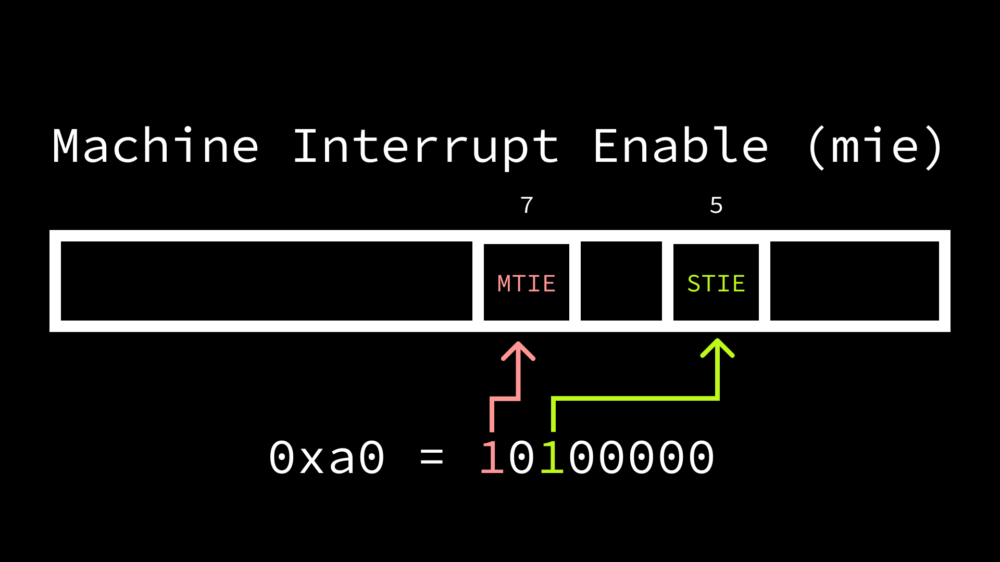
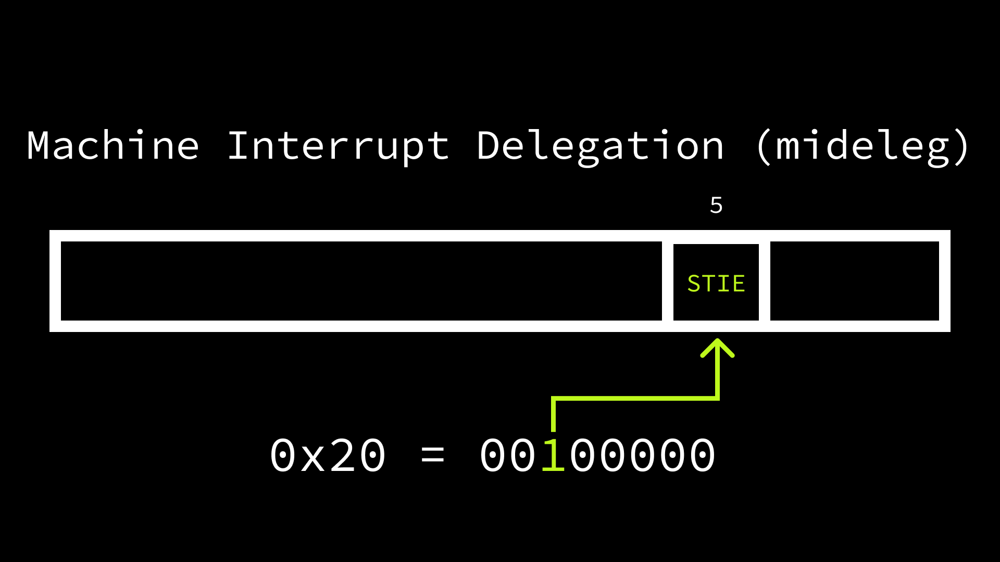

Operating systems do great work, but sometimes they need a little bit of help to know when to switch from one task to another. Thankfully, hardware is there to help! Today we are going to take a look at how operating systems schedule reminders for themselves using timer interrupts.

Sections Link to heading
Don’t care about the why and just want to see the code? Jump ahead to The Full Picture.
- Hardware Threads
- Exceptions, Interrupts, and Traps
- Memory-Mapped Registers
- Enabling Timer Interrupts
- Setting the Timer
- Jumping to Supervisor Mode
- Setting Up a Supervisor Trap Handler
- The Full Picture
- Running
- Concluding Thoughts
Hardware Threads Link to heading
Before we can talk about how operating systems switch from doing one thing to another, we need to establish how many things they can do at a time. In modern day machines, CPUs typically contain more than one “core”. Broadly speaking, the number of cores in a given CPU quantifies the number of things it can do at the same time (i.e. in parallel). The RISC-V privileged specification generalizes this concept with the notion of “Hardware Threads” (harts). One of the roles of an operating system (OS) is to schedule tasks across harts in order to maximize usage of the machine’s available resources.
For the purpose of this post, we are going to focus on a single hart. When we talk about executing instructions in the context of a single hart, the same problem statement can be generalized to multiple. The fundamental issue that we are addressing is the fact that the number of things users want to do at the same time on a machine is typically greater than the number of things the machine can handle. However, operating systems can make it appear to the user as though more things are happening at the same time than really are by rapidly switching between tasks. In order to do so the OS has a few options:
- Leave it to the task to inform the OS when it is willing to stop and let other operations run.
- Decide on the amount of a task to complete before starting it, then check whether the task should continue running again or it is time to do something else after the predetermined amount has been completed.
- Ask the hardware to periodically interrupt the execution of tasks so that the OS can evaluate whether to continue or do something else.
In reality, all three of the options are viable in specific use cases. For example, on a small microcontroller where there is really only one program being run and the operating system is primarily just providing it with a friendly interface to the hardware, it may be okay to just let the program itself decide what to do. While perhaps a less common case, the second option could also be viable if performance was not a concern and the operating system was able to manually instrument instructions in tasks. This is somewhat similar to how some debuggers work.
However, the third option is optimal in the case where many potentially untrusted programs are being run alongside each other. In this environment, once again assuming a single thread of execution, the operating system would be foolish to blindly schedule tasks to the CPU without some assurance that it would subsequently be given an opportunity to regain control of the hart. Without this guarantee, a single task could run in perpetuity, never allowing any other programs to progress, and the operating system would be unable to do anything about it. Fortunately, hardware designers are aware of this need and offer functionality that ensures that operating systems are able to manage tasks efficiently.
Exceptions, Interrupts, and Traps Link to heading
Much of the work that software is able to do is enabled by the functionality offered by hardware. Because the hardware is ultimately executing the instructions of software, it has the ability to pause execution of the current sequence and jump to another set of instructions. When this behavior is triggered, it is referred to as a trap. RISC-V adheres the the IEEE 754 floating point specification in defining traps as:
The transfer of control to a trap handler caused by either an exception or interrupt.
The RISC-V unprivileged specification defines four different types of traps at runtime:
- Contained: the trap is visible to, and handled by, software running inside the execution environment.
- Requested: the trap is a synchronous exception that is an explicit call to the execution environment requesting an action on behalf of software inside the execution environment.
- Invisible: the trap is handled transparently by the execution environment and execution resumes normally after the trap is handled.
- Fatal: the trap represents a fatal failure and causes the execution environment to terminate the execution.
Exceptions and interrupts are what cause a trap, and, though related, are the result of different operations.
- Exceptions: synchronous operations triggered at runtime as the result of a specific instruction being executed. We explored a common form of an exception, a syscall, in a previous post.
- Interrupts: asynchronous operations triggered externally and not associated with the execution of any specific instruction. A common example of an interrupt would be when a packet arrives at a Network Interface Controller (NIC) and it informs the CPU.
As mentioned before, in order to operate in an efficient manner, operating systems need to rely on an external system in order to switch between tasks. This behavior falls into the category of contained interrupts; the software wants to perform a check as to whether to continue with the current task in response to some sort of notification from the hardware.
Memory-Mapped Registers Link to heading
We have discussed control and status registers (CSRs) in a previous
post.
CSRs are a form of memory-mapped register, but not every memory-mapped register
is a CSR. One such example of the latter case is the mtime (“machine time”)
and mtimecmp (“machine time compare”) registers. Unlike CSRs, the memory
addresses of these registers is not within the 12-bit (4,096 possible locations)
encoding space reserved for CSRs and does not require the instructions defined
in the Zicsr extension to be used when interacting with their contents. They
do, as evidenced by their names, only allow access from machine mode (M).
The reasoning for exposing mtime as a memory-mapped register, rather than a
CSR is explained in a note in the privileged specification:
Accurate real-time clocks (RTCs) are relatively expensive to provide (requiring a crystal or MEMS oscillator) and have to run even when the rest of system is powered down, and so there is usually only one in a system located in a different frequency/voltage domain from the processors. Hence, the RTC must be shared by all the harts in a system and accesses to the RTC will potentially incur the penalty of a voltage-level-shifter and clock-domain crossing. It is thus more natural to expose
mtimeas a memory-mapped register than as a CSR.
Machine mode is given read-write access to the mtime and mtimecmp registers,
both of which have 64-bit precision in 32-bit and 64-bit systems. The hardware
ensures that the value in mtime increases at a constant frequency, and a timer
interrupt is triggered when the value in mtime becomes greater than the value
in mtimecmp. Therefore, periodic interrupts can be requested by software by
setting the value in the mtimecmp register.
Enabling Timer Interrupts Link to heading
However, in order for the interrupts to take effect and be handled appropriately by the operating system, three more steps need to be taken.
- Enable global supervisor interrupts (
mstatus.SIE) inmstatus. - Enable machine (
mie.MTIE) and supervisor (mie.STIE) timer interrupts inmie. - Delegate supervisor timer interrupts to supervisor mode (
mideleg).
Step 0: Differentiating Machine and Supervisor Timer Interrupts Link to heading
Okay, there are actually four steps, with step 0 being purely conceptual. We
have already described how timer interrupts can be generated using the mtime
and mtimecmp memory-mapped registers, but we are trying to generate interrupts
at the privilege level of the operating system, which does not have access to
these memory-mapped registers. If a timer interrupt cannot be generated in
supervisor mode, what makes a timer interrupt a “supervisor timer interrupt”
rather than a “machine timer interrupt”. It requires some careful reading of the
specification, but ultimately, a supervisor timer interrupt is one that is
triggered by
software.
While this does mean that “going through machine mode” is typically required for timer interrupts in lower privilege levels, it also introduces a unique property of RISC-V systems: the appearance of multiple timers can be exposed to lower privilege levels. This is mentioned briefly in the privileged specification:
Lower privilege levels do not have their own
timecmpregisters. Instead, machine-mode software can implement any number of virtual timers on a hart by multiplexing the next timer interrupt into themtimecmpregister.
Furthermore, as we will see later on in this post, various types of exceptions and interrupts can be delegated to lower privilege levels, meaning that we don’t have to go all the way to machine mode when we really want to trap to a lower privilege level.
Interestingly, lower privilege levels all the way to user mode (U) do have read-only access to a
timeCSR (number:0xC00), though it is not used in the context of timer interrupts.
Step 1: Enabling Global Interrupts Link to heading
While we are primarily interested in timer interrupts in this post, we need to
ensure that interrupts are enabled at all before moving to greater specificity.
The machine status CSR (mstatus) contains many of the configuration options in
RISC-V systems, such as the ability to modify the ISA width at lower privilege
levels (e.g. SXL for Supervisor XLEN and UXL for User XLEN). To enable
interrupts in machine and supervisor mode, the bits 1 and 3 must be set.
When we refer to bits in a CSR, we use zero-indexed notation. Therefore, bit
1> corresponds to the second bit and bit3corresponds to the 4th.
Bit 1 is the Supervisor Interrupt Enable (mstatus.SIE) control, while bit
3 is Machine Interrupt Enable (mstatus.MIE). As mentioned previously, we
need to ensure machine interrupts are enabled as they are the
“hardware-triggered” portion of the stack. Interestingly, for our simple case,
we can achieve this behavior without actually setting mstatus.MIE. The reason
for this is that higher privilege mode interrupts are always enabled when
operating in a lower privilege mode. From the privileged spec:
Interrupts for higher-privilege modes, y>x, are always globally enabled regardless of the setting of the global yIE bit for the higher-privilege mode.
The specification also describes what happens when we return from machine and supervisor modes:
An MRET or SRET instruction is used to return from a trap in M-mode or S-mode respectively. When executing an xRET instruction, supposing xPP holds the value y, xIE is set to xPIE; the privilege mode is changed to y; xPIE is set to 1; and xPP is set to the least-privileged supported mode (U if U-mode is implemented, else M). If xPP != M, xRET also sets MPRV=0.
The mret and sret instructions were explained and demonstrated in our post
on privilege
levels, as were
the xPP (x Previous Privilege) bits. As a recap: the xPP bits (two bits
wide) determine the next privilege level when returning from machine (mret) or
supervisor (sret) mode. There are also two bits we haven’t seen:
mstatus.MPIE and mstatus.SPIE. These correspond to the “machine previous
interrupt enable” (mstatus.MPIE) and “supervisor previous interrupt enable”
(mstatus.SPIE) values. These bits allow us to “remember” if interrupts were
previously enabled at a given privilege level. This is required due to the
behavior on trapping from one privilege level to another:
When a trap is taken from privilege mode y into privilege mode x, xPIE is set to the value of xIE; xIE is set to 0; and xPP is set to y.
This allows for RISC-V systems to support nested traps. A trap is considered nested if it was taken while handling another trap. While we typically think of trapping from a lower privilege level to a higher one (vertical trap), traps may also remain at the same privilege level (horizontal trap). Maintaining separate interrupt enable and previous interrupt enable bits provides a “two-level stack” to support nested traps in this case.
For example, if machine mode interrupts are enabled (mstatus.MIE = 1) and we
trap to machine mode from supervisor mode, the previous machine interrupt enable
will be set to 1 (mstatus.MPIE = 1) and the “current” will be set to 0
(mstatus.MIE = 0). The rationale for this behavior is also described in a note
in the spec:
For lower privilege modes, any trap (synchronous or asynchronous) is usually taken at a higher privilege mode with interrupts disabled upon entry. The higher-level trap handler will either service the trap and return using the stacked information, or, if not returning immediately to the interrupted context, will save the privilege stack before re-enabling interrupts, so only one entry per stack is required.
Because we don’t want to be interrupted while already servicing a trap, the
hardware is disabling interrupts for us. It will also helpfully re-enable them
when we return (mret), but what if we trap while servicing the first trap? We
still don’t want interrupts to be enabled, but we also don’t want interrupts to
be automatically re-enabled when returning from the nested trap handler.
Conveniently, when we enter the nested trap handler, mstatus.MIE = 0 and
mstatus.MPIE = 1, but mstatus.MPIE gets set to the value of mstatus.MIE,
leaving us with mstatus.MIE = 0 and mstatus.MPIE = 0. When we return from
the nested trap handler, mstatus.MIE will get set to the value in
mstatus.MPIE (i.e. remain 0) and mstatus.MPIE will be set to 1. When we
return from the “parent” trap handler, we want interrupts to be re-enabled,
which occurs when mstatus.MIE is set to the value in mstatus.MPIE (1) and
mstatus.MPIE is set to 1.

However, as previously mentioned, for our simple use-case of triggering timer
interrupts for an operating system running in supervisor mode, we don’t actually
have to enable machine mode interrupts as they are automatically enabled
(regardless of mstatus.MIE) while we are executing in a lower privilege mode
(i.e. supervisor). All we need to do is enable supervisor timer interrupts by
setting mstatus.SIE to 1. As we have seen before, we can use the “CSR set”
pseudo-instruction to set the second bit to 1 in mstatus. Since we know that
we are also wanting to jump to supervisor mode in the future, we can set the
machine previous privilege (mstatus.MPP) to supervisor (01). To perform both
of these operations, we’ll need to first clear mstatus.MPP with the “CSR
clear” pseudo-instruction, then set both mstatus.SIE and mstatus.MPP to
their respective values.
li t0, 0x1800
csrc mstatus, t0
li t0, 0x802
csrs mstatus, t0
Step 2: Enabling Timer Interrupts Link to heading
While still in machine mode, we also need to ensure that timer interrupts
specifically are enabled. The various types of possible interrupts are enabled
or disabled in machine mode using the mie (“machine interrupt enable”) CSR.
Bit 5 corresponds to supervisor timer interrupts (mie.STIE), while bit 7
corresponds to machine timer interrupts (mie.MTIE).

Machine timer interrupts are what the hardware will trigger when the mtime
value is greater than or equal to mtimecmp, so we need to ensure that
mie.MTIE is set to 1. When a machine timer interrupt occurs, we then want to
inform the operating system via a supervisor timer interrupt, so we also need to
set mie.STIE = 1.
li t0, 0xa0 csrs mie, t0
Step 3: Delegating Supervisor Timer Interrupts to Supervisor Mode Link to heading
The last step to enable our timer interrupts is to let software running in
supervisor mode handle supervisor timer interrupts. By default, all traps are
handled in machine mode, but the mideleg (machine interrupt delegation) and
medeleg (machine exception delegation) CSRs allow for the various types of
interrupts and exceptions to be selectively delegated to supervisor mode. The
mideleg bit positions correspond to those in mie / mip, so setting bit 5
to 1 results in supervisor timer interrupts being delegated to supervisor mode.
li t0, 0x20
csrs mideleg, t0

Because supervisor timer interrupts are triggered by software, we also need to
write the trap handler that raises a supervisor timer interrupt after a machine
timer interrupt is raised. Supervisor interrupts can be triggered from machine
mode by setting the machine interrupt pending (mip) bit that corresponds to
supervisor timer interrupts (mip.STIP). In the machine mode trap handler,
we’ll set bit 5 (STIP) in mip and immediately return to supervisor mode.
mtrap:
li t0, 0x20
csrs mip, t0
mret
We’ll also need to tell the hardware that we want to jump to the address of the
mtrap symbol when a trap occurs in machine mode. This can be accomplished by
loading the address of mtrap into the mtvec (machine trap vector) CSR.
la t0, mtrap
csrw mtvec, t0
Setting the Timer Link to heading
Before we leave machine mode, we can’t forget to configure the timer to
interrupt us at some point in the future. We’ll set it to some arbitrary time in
the future (500000) as a starting point. Because mtimecmp is memory-mapped,
its address must be discovered in order to write the value. The location is
platform-dependant, but in QEMU the address can be calculated by taking the base
Core Local Interrupt Controller (CLINT) address (0x2000000) and adding 4000 + 8(hartID). When we execute our program, we’ll run QEMU with a single core,
meaning that our hartID = 0 and the address of mtimecmp is 0x2004000. To
set mtimecmp generically, we could read our hard identifier from the mhartid
CSR.
li t0, 500000
li t1, 0x2004000
sd t0, 0(t1)
Jumping to Supervisor Mode Link to heading
Now that we have performed the necessary configuration that is only accessible
in machine mode, we are ready to jump to supervisor mode. Because we already set
mstatus.MPP to supervisor (01), issuing an mret instruction will cause us
to return in supervisor mode. Before doing so, we’ll load the address of the
supervisor symbol, which is our yet to be defined supervisor mode entrypoint,
into the machine exception program counter (mepc) to specify where we want to
return.
la supervisor, t0
csrw mepc, t0
mret
Setting Up a Supervisor Trap Handler Link to heading
Similar to our mtrap routine in machine mode, we also need to setup a
supervisor mode trap handler and ensure it is invoked on supervisor timer
interrupts. We won’t actually do anything meaningful in this handler today, but
in a real operating system a timer interrupt may signal that it is time to
switch from one process to another, or perform some sort of I/O operation. Our
supervisor trap handler will just loop continuously.
strap:
j spin
spin:
j spin
Supervisor mode also has a trap vector CSR (stvec) that informs the hardware
where it should jump on a trap to supervisor mode. We’ll point it at the address
of strap in our aforementioned supervisor entrypoint, after which we will jump
to a loop:
supervisor:
la t0, strap
csrw stvec, t0
j spin
The Full Picture Link to heading
Putting all the pieces together, our program looks as follows:
timers.S
.option norvc
.section .data
.section .text.init
.global _start
_start:
li t0, 0x1800
csrc mstatus, t0
li t0, 0x802
csrs mstatus, t0
li t0, 0xa0
csrs mie, t0
li t0, 0x20
csrs mideleg, t0
la t0, mtrap
csrw mtvec, t0
li t0, 500000
li t1, 0x2004000
sd t0, 0(t1)
la t1, supervisor
csrw mepc, t1
mret
mtrap:
li t0, 0x20
csrs mip, t0
mret
supervisor:
li t0, 20
la t0, strap
csrw stvec, t0
j spin
strap:
j spin
spin:
j spin
We can use a minimal linker script to place the program at QEMU’s expected memory address:
virt.ld
SECTIONS
{
. = 0x80000000;
.text : { *(.text) }
}
With timer.S and virt.ld in the same directory, the following commands can
be used to assemble and link the program with the our RV64 toolchain:
$ riscv64-unknown-elf-as timers.S -o timers.o
$ riscv64-unknown-elf-ld -Tvirt.ld timers.o -o timers
We can then emulate a 64-bit RISC-V machine using QEMU in one terminal window:
$ qemu-system-riscv64 -machine virt -cpu rv64 -smp 1 -s -S -nographic -bios none -kernel timers
Then attach GDB in another window:
$ riscv64-unknown-elf-gdb timers -ex "target remote :1234" -ex 'display /i $$pc' -ex 'break *_start' -ex 'break *supervisor' -ex 'break *mtrap' -ex 'break *strap' -ex 'display *0x2004000' -ex 'display *0x200BFF8'
Running Link to heading
The commands from the previous section setup our debugger (GDB) with the following:
- Display the current instruction on each step (
-ex 'display /i $$pc'). - Break at
_start,supervisor,mtrap, andstrap. - Display the integer values of
mtime(-ex 'display *0x2004000') andmtimecmp(-ex 'display *0x200BFF8') on each step.
We can continue to our first breakpoint (_start) using the c command:
(gdb) c
Continuing.
Breakpoint 1, 0x0000000080000000 in _start ()
1: x/i $pc
=> 0x80000000 <_start>: lui t0,0x2
2: *0x2004000 = 0
3: *0x200BFF8 = 23746
As expected, the program counter (pc) contains 0x80000000, which is where
our program is loaded in memory, and the value in mtime has advanced to
32746, while mtimecmp remains 0. We also see that our first instruction,
li t0, 0x1800, has been converted from the load immediate pseudo-instruction
to multiple literal instructions, the first being lui t0,0x2 (“load upper
immediate”). Continuing again, we reach our next breakpoint when we return from
machine mode to supervisor mode.
(gdb) c
Continuing.
Breakpoint 2, 0x0000000080000060 in supervisor ()
1: x/i $pc
=> 0x80000060 <supervisor>: li t0,20
2: *0x2004000 = 500000
3: *0x200BFF8 = 21122
We have now performed all of the steps required for enabling timer interrupts,
so we can see that mtimecmp had been set and is greater than mtime. We
should also be able to see that all of the CSRs have their proper values.
(gdb) i r mie
mie 0xa0 160
(gdb) i r mideleg
mideleg 0x20 32
(gdb) i r mtvec
mtvec 0x80000054 2147483732
(gdb) x/i *mtrap
0x80000054 <mtrap>: li t0,32
Now that we are in supervisor mode, we can single step to ensure that we
properly configure our supervisor trap vector (stevec) before entering our
continuous loop.
Breakpoint 2, 0x0000000080000060 in supervisor ()
1: x/i $pc
=> 0x80000060 <supervisor>: li t0,20
2: *0x2004000 = 500000
3: *0x200BFF8 = 19092
(gdb) si
0x0000000080000064 in supervisor ()
1: x/i $pc
=> 0x80000064 <supervisor+4>: auipc t0,0x0
2: *0x2004000 = 500000
3: *0x200BFF8 = 28984
(gdb) si
0x0000000080000068 in supervisor ()
1: x/i $pc
=> 0x80000068 <supervisor+8>: addi t0,t0,16
2: *0x2004000 = 500000
3: *0x200BFF8 = 42771
(gdb) si
0x000000008000006c in supervisor ()
1: x/i $pc
=> 0x8000006c <supervisor+12>: csrw stvec,t0
2: *0x2004000 = 500000
3: *0x200BFF8 = 47193
(gdb) si
0x0000000080000070 in supervisor ()
1: x/i $pc
=> 0x80000070 <supervisor+16>: j 0x80000078 <spin>
2: *0x2004000 = 500000
3: *0x200BFF8 = 55310
Finally, if we continue we should enter the loop until mtime exceeds
mtimecmp, at which point we should trap in machine mode.
(gdb) c
Continuing.
Breakpoint 3, 0x0000000080000054 in mtrap ()
1: x/i $pc
=> 0x80000054 <mtrap>: li t0,32
2: *0x2004000 = 500000
3: *0x200BFF8 = 502329
As expected, we have stopped at our breakpoint at mtrap, and we can see that
mtime is greater than mtimecmp, which has triggered a timer interrupt. We
can verify the type of interrupt that caused the trap by examining the mcause
register.
(gdb) i r mcause
mcause 0x8000000000000007 -9223372036854775801
Every interrupt and exception has a unique code, with the most significant bit
in mcause indicating whether it is an interrupt (1) or exception (0) and
the remaining bits indicating the type. The most significant bit in this case is
1, and the remaining bits indicate that the code is 7, which corresponds to
a machine timer interrupt. Trap handlers may opt to evaluate the cause and let
it influence what actions should be taken, but in our case we are always going
to raise a supervisor timer interrupt in response. Continuing again should land
us in our supervisor trap handler.
Breakpoint 4, 0x0000000080000074 in strap ()
1: x/i $pc
=> 0x80000074 <strap>: j 0x80000078 <spin>
2: *0x2004000 = 500000
3: *0x200BFF8 = 517097
Supervisor mode has a corresponding CSR, scause, which indicates what caused
the trap in supervisor mode.
(gdb) i r scause
scause 0x8000000000000005 -9223372036854775803
Here we once again see that the source was an interrupt (most significant bit =
1), but the code is now 5, which corresponds to a supervisor timer
interrupt. Because we delegated handling supervisor timer interrupts to
supervisor mode, we land in our supervisor trap handler, rather than our machine
trap handler.
Concluding Thoughts Link to heading
This post has demonstrated the minimum amount of configuration required to
enable timer interrupts, but the small program we have written would not be
useful in a meaningful scenario. For example, because we never reset mtimecmp,
we will continue to trap to machine mode every time we try to move forward. If
interested in another minimal example of handling timer interrupts in a more
robust fashion, check out the xv6 operating
system.
As always, these posts are meant to serve as a useful resource for folks who are interested in learning more about RISC-V and low-level software in general. If I can do a better job of reaching that goal, or you have any questions or comments, please feel free to send me a message @hasheddan on Twitter or @hasheddan@types.pl on Mastodon!